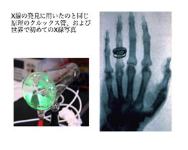

Open Lab
友好祭OpenLab企画では、大阪府立大学の研究室が見ることや、どんな研究をしているのかを知ることができます！
展示、講義、体験型企画など様々な企画がございますので、お気軽にお立ち寄りください。
＊日時・場所
5月26日(土)・27日(日)
中百舌鳥キャンパス構内
＊企画内容
【5月26日】
| 企画タイトル | 身近にある放射線とその利用 |
|  | 120年以上前、レントゲン博士はX線を発見し、それから人類は放射線によって様々な利益を得ました。本学の放射線施設や世界中で利用されている放射線について紹介します。 |
| 時間 | 11:00～17：00 |
| 場所 | A5棟308講義室 |
| 企画タイトル | 植物工場見学会 |
| 植物工場研究センターは、蛍光灯やLEDを用いた完全人工光型植物工場に特化した国内最大規模の研究施設です。レタス(「府大マルシェ」)等を生産する様子をご見学頂きます。 参加には事前予約が必要です！！参加申込はこちらから↓ 申し込みはこちらから。 | |
| 時間 | 13：30～14：30 15：15～16：15 |
| 場所 | C20,C21,C22棟 |
| 企画タイトル | 獣医学類の研究・教育の紹介 |
| 生命環境科学域 獣医学類・獣医学専攻における教育・研究内容をポスター展示します。ご来場の方にはパンフレットも用意しておりますので、お気軽にお立ち寄りください。 | |
| 時間 | 10：00～16：00 |
| 場所 | B1棟第7講義室 |
| 企画タイトル | あなたを支える情報技術(IT)にふれてみよう |
 | あなたの周りの情報技術(IT)にふれてみよう！ ネット通販のAmazonなどのおすすめシステムを体験し，その仕組みや関連する技術について知ることができます。 |
| 時間 | 10：30～16：00 |
| 場所 | B4棟E414講義室 |
| 企画タイトル | 光で遊ぼう！！ 回折格子で見る光の虹 |
| 回折格子を使って LED や蛍光灯の光を分けて観察します。鮮やかでキレイな光の虹を見て、LED 電球の仕組みを学ぼう！作った回折格子は記念にプレゼントします！遊びに来てね。 | |
| 時間 | 10：00～17：00 |
| 場所 | B8棟102講義室 |
| 企画タイトル | 大人のための電気の教室 |
| 子供向けロボット教室を見てやってみたいなぁ…と思ったお母さん!お父さん! こちら大人向けの体験会です! 電気の基礎からおもちゃ改造まで。モノづくり大好き人間集まれ!! | |
| 時間 | 13：00～14：30 15：30～17：00 |
| 場所 | B4棟W411講義室 |
【5月27日】
| 企画タイトル | 獣医学類の研究・教育の紹介 |
 | 生命環境科学域 獣医学類・獣医学専攻における教育・研究内容をポスター展示します。ご来場の方にはパンフレットも用意しておりますので、お気軽にお立ち寄りください。 |
| 時間 | 10：00～16：00 |
| 場所 | B1棟第7講義室 |
| 企画タイトル | あなたを支える情報技術(IT)にふれてみよう |
 | あなたの周りの情報技術(IT)にふれてみよう！ ネット通販のAmazonなどのおすすめシステムを体験し，その仕組みや関連する技術について知ることができます。 |
| 時間 | 10：30～16：00 |
| 場所 | B4棟E414講義室 |
| 企画タイトル | 超伝導理論研究の最前線 |
| このOpen Labでは超伝導現象を紹介します。リニアやMRIに使われている超伝導って一体何なんだ！？と、超伝導に興味を持った人はぜひお越しください。 | |
| 時間 | 13：00～16：00 |
| 場所 | B9棟207,208,209講義室 |
＊連絡先
OpenLab出展企画担当者：野村明日香
Address：yu.openlab@gmail.com
Tel：090-6323-5276